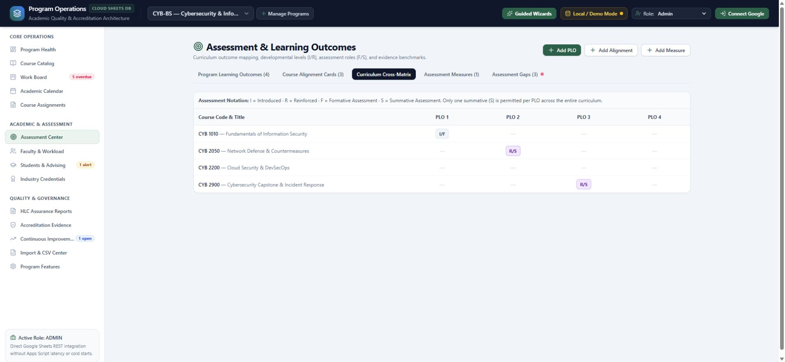
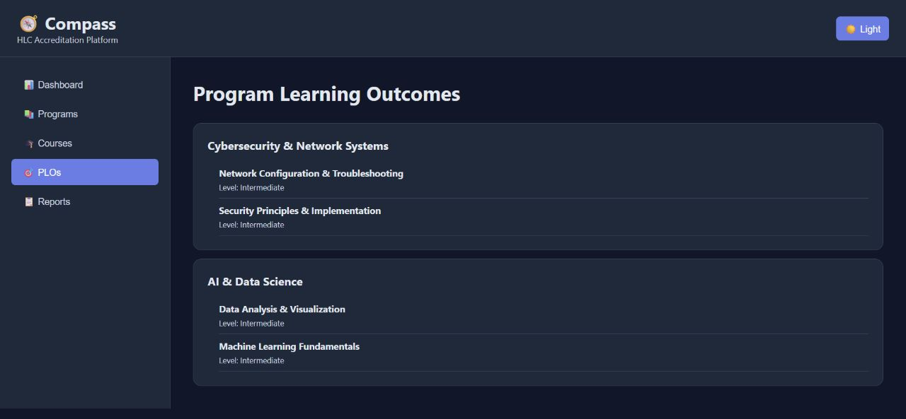

I created Operations-App and Compass to make college program work easier to manage: course delivery, faculty workload, assessment, workforce alignment, evidence, and improvement. Accreditation reporting is one part of that larger operational picture.
Bring scattered course, faculty, task, assessment, and evidence records into workflows that program leaders can use.
My contribution
Project creation and development, informed by my experience leading a college cybersecurity program.
Skills demonstrated
Academic workflow design, React interfaces, data relationships, search and filtering, task management, and assessment-oriented product design.
OPERATIONS-APP / LIVE DEMO & PUBLIC SOURCE
Program Operations & Academic Quality
An academic operations application covering courses, term assignments, tasks, calendars, faculty workload, advising, assessment, industry credentials, accreditation evidence, and continuous improvement.

Actual public application in Local / Demo Mode. The sample curriculum matrix shows introduced, reinforced, formative, and summative mappings; it is not an institutional assessment result.
Search the catalog and open course workspaces showing sections, learning outcomes, assessment mappings, and learning activities. Separate views bring together term assignments, delivery modalities, calendars, and faculty workload.
WORK & FOLLOW-THROUGH
Make responsibilities visible
A work board tracks program, course, and instructor tasks by stage, priority, owner, and due date. Advising views organize follow-up needs; improvement records connect findings with actions and owners.
LEARNING & WORKFORCE ALIGNMENT
See the connections and gaps
Program and course outcomes, curriculum matrices, assessment measures, missing-measure flags, and industry-credential alignment help expose how a program’s pieces fit together.
EVIDENCE & DATA
Support review and reuse
Accreditation evidence can be searched by requirement and filtered by status. CSV parsing previews records before import. HLC report views and export controls build on program information.
Demonstrated interactions
Course search narrowed four sample courses to one; selecting it opened its detailed workspace.
The blocked-task filter isolated the relevant task; a new local demo task saved and appeared on the board.
Outcome matrix and assessment-gap tabs rendered their respective mappings and missing-measure lists.
CSV text parsed into a one-row preview before any import was committed.
Scheduling, workload, advising, credentials, improvement, evidence, and report views loaded with sample records.
Verification and current scope
Reviewed the public source and live demo on November 22, 2026. The saved demo task cleared on reload: this verifies an in-session operation, not durable storage. The source includes Google Sheets/Drive/Calendar integration, setup wizards, recurring-task generation, and spreadsheet-import logic; authenticated integrations and all write/export paths were not end-to-end tested. Report content requires institutional review against current requirements; deployment, time savings, and accreditation results are not established by this demo.
Compass explores a connected workspace for Ohio community colleges: program structure, courses, learning outcomes, industry credentials, and transfer-pathway context, alongside intended accreditation-reporting workflows.

Actual App-Simple.jsx prototype run locally with its original sample data. This outcome view is functioning; sample program records are not institutional results.
01 / Programs
Organize degree and certificate context.
02 / Courses
Browse course information within programs.
03 / Outcomes
Review program learning outcomes.
04 / Reporting
Prototype the next step toward report preparation.
Workflow illustration based on reviewed project files; not a screenshot or live report generator.
Implemented prototype
Tested dashboard, program, course, and learning-outcome views plus light/dark mode in App-Simple.jsx. Also ran the setup-script variant and verified its industry-credential listing.
Design & setup work
Project materials include sample course-to-program outcome relationships, credential associations, Ohio pathway identifiers, role definitions, validation helpers, and a proposed relational database schema.
Current stage
Working front-end prototypes with sample data. Report generation and production backend workflows remain unfinished.
Prototype verification and development scope
Both saved variants were run locally during the November 22, 2026 review. Navigation, program and course displays, learning-outcome and credential views, and theme controls worked. Report buttons have no generation handlers. Course selection in the setup variant updates state without displaying a detail view.
The displayed compliance percentage is hard-coded sample data. Database connectivity, editing workflows, permission enforcement, and production deployment are not established by these prototypes.
Evidence: App-Simple.jsx, setup-compass.sh, and QUICK_START.md in my project archive, dated September 2026. Private source materials remain private.
WHY THIS WORK MATTERS
Turn domain knowledge into usable tools.
These projects show how I translate academic workflows into software and structured information. They complement my immersive, gamified learning work: both start with a real task, consider the user’s next decision, and make the path through complex information easier to follow.
My broader workforce-learning design uses NIST NICE and relevant AI and cybersecurity frameworks. Accreditation requirements and software functionality are evaluated separately.